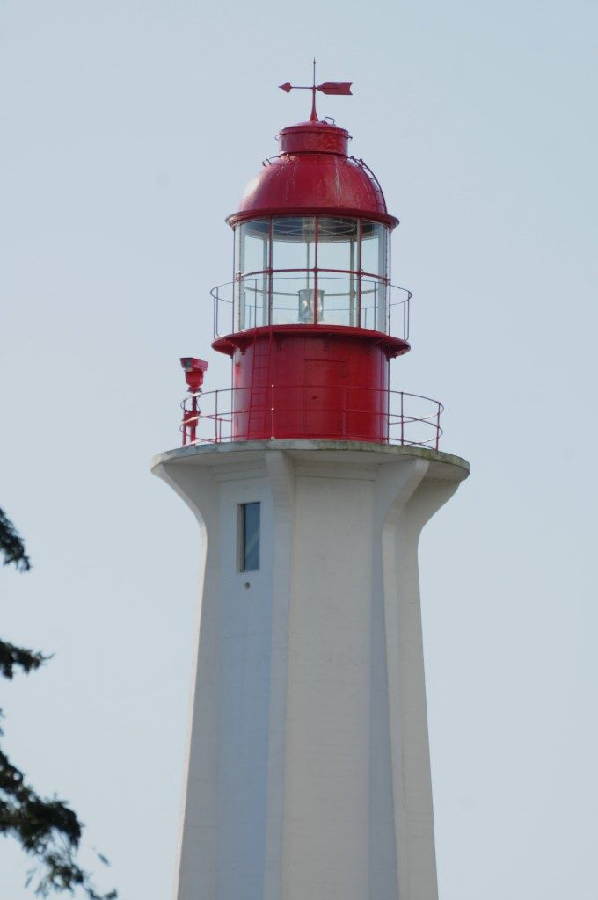
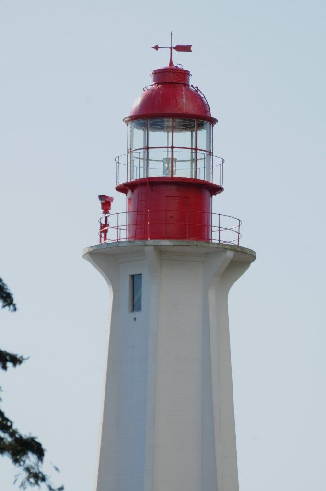

Lighthouse Park is one of West Vancouver’s most peaceful coastal spots, known for its old-growth forest, rocky shoreline, and wide ocean views. Its short trails and quiet atmosphere make it an ideal escape from city noise.
Visitors can enjoy short, accessible trails, forest paths, cliff-side views over the ocean, and the calm of the woods or coastline. Ideal for escaping city noise and recharging.
The Point Atkinson Lighthouse was first built in 1874 to guide ships entering Vancouver’s harbour. The current concrete lighthouse tower was completed in 1912, and the surrounding forest was protected early on to keep the light visible — which is why Lighthouse Park still contains rare old-growth trees. In 1994, it became a National Historic Site of Canada.
 


The park is located in the southern part of West Vancouver, on a small peninsula overlooking Burrard Inlet and the entrance to Howe Sound. It’s about a 25–30 minute drive from downtown Vancouver, but feels far removed from the city.